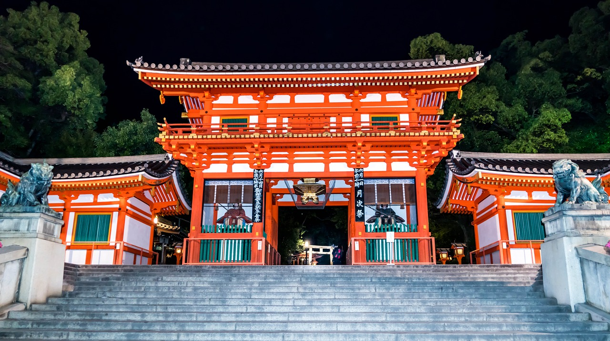

スポット紹介
- 金閣寺
金閣寺は京都で一番と言っていいほどの有名観光スポットで海外でもよく知られています。
その見た目は文字通り金色に輝いており、正式名称は鹿苑寺といいます。
拝観料：大人（高校生以上）400円
小中学生 300円
- 祇園四条

京都の代表的な繁華街である祇園。京都四条駅の周辺を特に祇園四条といいます。
中でも特に代表的なのは八坂神社です。八坂神社は祇園さんとも呼ばれ親しまれています。
拝観料：無料
- 伏見稲荷大社

稲荷大神を祀っている神社であり、その稲荷大神の加護を受けたパワースポットとなっています。
特徴として千本鳥居など多くの赤い鳥居があることで知られています。
拝観料：無料
- 龍安寺
世界遺産にも登録されている龍安寺は美しい石庭で有名で、
石庭の石を一度に全て見ることのできる角度がないように作られています。
写真のように紅葉やまた桜なども季節によって楽しむことができます。
拝観料：大人（高校生以上） 500円
小中学生 300円
- 仁和寺
仁和寺にある法師」の舞台でもある仁和寺は境内に五重塔や二王門などがあります。
季節により、紅葉や桜も楽しむことができます。
拝観料：大人 500円
小中学生 300円
- 清水寺

「清水の舞台から飛び降りる」という慣用句にも登場する清水寺は、慣用句の通り
その舞台が有名であり、清水寺の敷地全体は世界遺産にも登録されています。
拝観料：大人 300円
小中学生 200円
大人二人の場合の拝観料計：3400円
金閣寺は京都で一番と言っていいほどの有名観光スポットで海外でもよく知られています。 その見た目は文字通り金色に輝いており、正式名称は鹿苑寺といいます。 拝観料：大人（高校生以上）400円 小中学生 300円
京都の代表的な繁華街である祇園。京都四条駅の周辺を特に祇園四条といいます。 中でも特に代表的なのは八坂神社です。八坂神社は祇園さんとも呼ばれ親しまれています。 拝観料：無料
稲荷大神を祀っている神社であり、その稲荷大神の加護を受けたパワースポットとなっています。 特徴として千本鳥居など多くの赤い鳥居があることで知られています。 拝観料：無料
世界遺産にも登録されている龍安寺は美しい石庭で有名で、 石庭の石を一度に全て見ることのできる角度がないように作られています。 写真のように紅葉やまた桜なども季節によって楽しむことができます。 拝観料：大人（高校生以上） 500円 小中学生 300円
仁和寺にある法師」の舞台でもある仁和寺は境内に五重塔や二王門などがあります。 季節により、紅葉や桜も楽しむことができます。 拝観料：大人 500円 小中学生 300円
「清水の舞台から飛び降りる」という慣用句にも登場する清水寺は、慣用句の通り その舞台が有名であり、清水寺の敷地全体は世界遺産にも登録されています。 拝観料：大人 300円 小中学生 200円